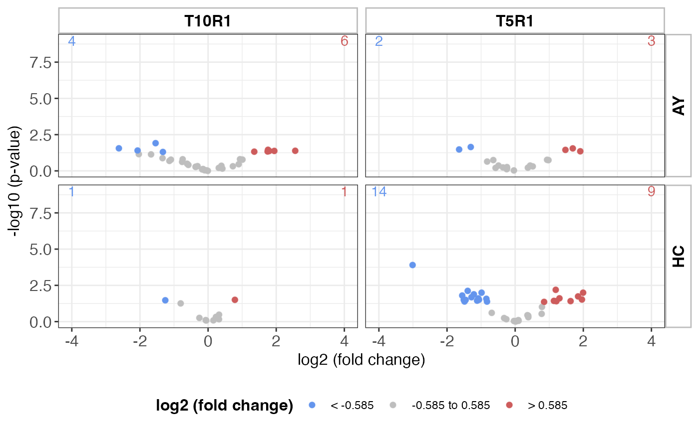
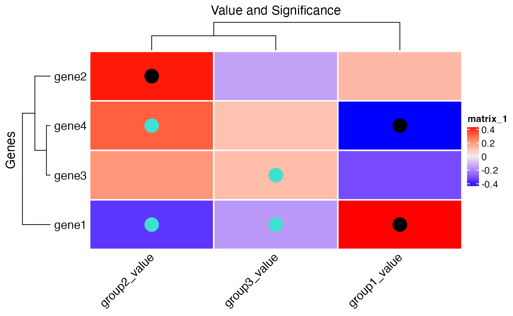
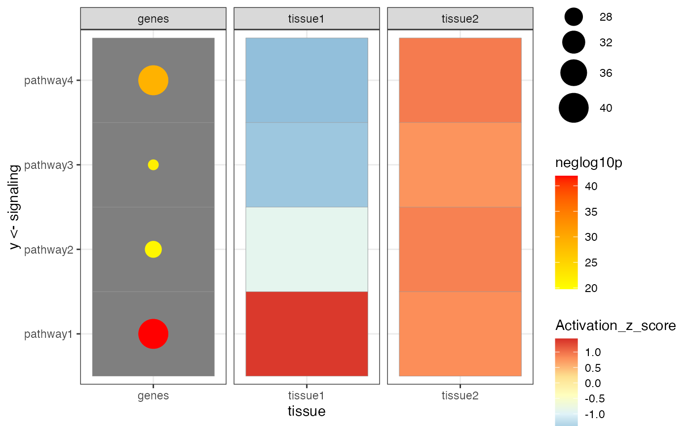

vignettes/MultiModalGraphics.Rmd
MultiModalGraphics.RmdThe MultiModalGraphics package provides rich
functionalities for combining different data types into an integrative
visual representation. This package facilitates the creation of
intuitive visualizations that merge multiple streams of data into a
single coherent graphic.
This comprehensive guide includes the following sections: - Generating Data - Using ThresholdedScatterplot - Informative Heatmap Usage - CompositeFeatureHeatmap Visualization
This section demonstrates how to use the
get_informative_heatmap_df(),
get_clear_scatterplot_df(), and
get_multifeature_grid_df() functions from the
MultiModalGraphics package.
The get_informative_heatmap_df() function provides a
sample dataframe suitable for creating informative heatmaps. The
dataframe includes values for three groups and their associated
p-values, with row names indicating gene identifiers.
informative_heatmap_df <- get_informative_heatmap_df()
print(informative_heatmap_df)## group1_value group2_value group3_value pvalue1 pvalue2 pvalue3
## gene1 0.42 -0.36 -0.17 0.01 0.07 0.07
## gene2 0.13 0.41 -0.15 0.12 0.03 0.30
## gene3 -0.32 0.21 0.12 0.12 0.21 0.06
## gene4 -0.42 0.32 0.11 0.02 0.08 0.21The get_clear_scatterplot_df() function provides a
sample dataframe that represents data suitable for creating a clear
scatterplot. This includes log2 fold change values, p-values, and
regulation direction for a set of genes across different tissues and
time points.
clear_scatterplot_df <- get_clear_scatterplot_df()
print(clear_scatterplot_df)## ProbeName log2fc p regulation organ timePoint
## 1 A_51_P439092...33363 -0.174723077 0.791913617 down AY T10R1
## 2 A_52_P384419...194714 -0.247694685 0.764354557 down AY T5R1
## 3 A_51_P349213...579102 1.299996406 0.024774591 up HC T5R1
## 4 A_52_P308681...1099 1.747401972 0.045937321 up AY T10R1
## 5 A_51_P506593...23052 -0.365981518 0.531668669 down AY T10R1
## 6 A_52_P472397...686 1.758912918 0.035130042 up AY T10R1
## 7 A_52_P382040...187763 0.373215200 0.605194496 up AY T5R1
## 8 A_51_P253224...445534 -0.054890314 0.832965966 down HC T10R1
## 9 A_51_P212515...165620 -1.644842352 0.033283207 down AY T5R1
## 10 A_51_P496400...947 1.795242973 0.042537024 up AY T10R1
## 11 A_52_P78966...578761 -1.281928252 0.020731403 down HC T5R1
## 12 A_52_P392663...26869 0.313349559 0.625976400 up AY T10R1
## 13 A_52_P1188270...2240 -2.033641911 0.070225812 down AY T10R1
## 14 A_52_P628127...579140 -1.083198709 0.025123353 down HC T5R1
## 15 A_52_P237927...613531 0.099148363 0.882410435 up HC T5R1
## 16 A_52_P510215...577721 -0.986068049 0.010081838 down HC T5R1
## 17 A_52_P215876...180505 -0.489574144 0.429268519 down AY T5R1
## 18 A_51_P480928...6341 0.936977674 0.156622817 up AY T10R1
## 19 A_51_P361675...202605 -0.037236899 0.931446705 down AY T5R1
## 20 A_52_P762901...413042 -0.804724058 0.055514113 down HC T10R1
## 21 A_52_P494930...603091 -0.324581202 0.567513865 down HC T5R1
## 22 A_52_P546135...6876 -1.091747125 0.167967381 down AY T10R1
## 23 A_51_P185584...439265 0.319718467 0.688340289 up HC T10R1
## 24 A_52_P706621...580357 -1.486165330 0.041010476 down HC T5R1
## 25 A_51_P500044...430379 0.231022841 0.477636216 up HC T10R1
## 26 A_51_P225764...165332 -1.303340755 0.022604889 down AY T5R1
## 27 A_52_P522190...191320 -0.238381463 0.689164750 down AY T5R1
## 28 A_52_P308863...580401 -0.826542470 0.041586358 down HC T5R1
## 29 A_52_P306236...579621 -1.508721908 0.031427603 down HC T5R1
## 30 A_51_P250459...916 1.943426417 0.042054287 up AY T10R1
## 31 A_52_P510583...20587 -0.309243814 0.471875219 down AY T10R1
## 32 A_52_P1197518...433587 -0.255133801 0.555014385 down HC T10R1
## 33 A_51_P406365...424048 0.321446030 0.333164369 up HC T10R1
## 34 A_52_P1099932...579283 -0.845592489 0.026671507 down HC T5R1
## 35 A_51_P379385...577270 1.191034535 0.006406498 up HC T5R1
## 36 A_52_P126146...165493 1.691143015 0.028140733 up AY T5R1
## 37 A_51_P259245...165689 1.475659486 0.035689970 up AY T5R1
## 38 A_52_P154311...29697 0.420332856 0.696597179 up AY T10R1
## 39 A_52_P384822...8667 -1.135408962 0.205178177 down AY T10R1
## 40 A_52_P1005512...22540 -0.362487601 0.518412894 down AY T10R1
## 41 A_52_P476075...600667 0.386132095 0.498642861 up HC T5R1
## 42 A_51_P490100...595446 0.360038532 0.361338785 up HC T5R1
## 43 A_51_P492648...579657 -1.453722762 0.031876774 down HC T5R1
## 44 A_52_P643798...431268 0.236883933 0.498672890 up HC T10R1
## 45 A_51_P304771...579957 -1.116479626 0.035812217 down HC T5R1
## 46 A_52_P168482...170414 0.978147341 0.181231559 up AY T5R1
## 47 A_51_P380861...577408 -1.392903245 0.007588725 down HC T5R1
## 48 A_52_P126274...6392 -0.746072838 0.157767285 down AY T10R1
## 49 A_52_P330424...10301 -0.762224323 0.240872913 down AY T10R1
## 50 A_51_P467051...455 -2.618483941 0.027771825 down AY T10R1
## 51 A_52_P410383...832 -2.069264904 0.039526205 down AY T10R1
## 52 A_51_P426708...617071 0.011088379 0.984779795 up HC T5R1
## 53 A_51_P263407...140 -1.541077788 0.012241003 down AY T10R1
## 54 A_51_P186703...180494 0.439340644 0.429011546 up AY T5R1
## 55 A_51_P171288...40782 -0.007012264 0.989007891 down AY T10R1
## 56 A_51_P305896...580172 1.626792020 0.038545102 up HC T5R1
## 57 A_52_P205772...186545 -0.357608144 0.576265507 down AY T5R1
## 58 A_51_P209122...16973 -0.578184061 0.388197423 down AY T10R1
## 59 A_52_P260010...596635 0.384087067 0.391336552 up HC T5R1
## 60 A_52_P391110...590898 -0.687779723 0.248992465 down HC T5R1
## 61 A_52_P346256...188555 -0.575064065 0.624051935 down AY T5R1
## 62 A_51_P117924...5185 -1.337148428 0.132688898 down AY T10R1
## 63 A_51_P292757...170362 -0.641746266 0.179918758 down AY T5R1
## 64 A_52_P3825...1166 1.355403972 0.047339372 up AY T10R1
## 65 A_51_P315634...579528 1.960034466 0.030027321 up HC T5R1
## 66 A_51_P241769...577728 1.994427731 0.010115655 up HC T5R1
## 67 A_52_P176245...583563 0.787093630 0.097069701 up HC T5R1
## 68 A_52_P105599...31567 -0.146659005 0.744353687 down AY T10R1
## 69 A_52_P617542...607027 -0.258031497 0.684869115 down HC T5R1
## 70 A_52_P408690...579590 -1.062129633 0.030929349 down HC T5R1
## 71 A_51_P446645...880 2.558087528 0.041093571 up AY T10R1
## 72 A_51_P511833...412412 -1.256226278 0.033776928 down HC T10R1
## 73 A_52_P14526...183027 0.516280095 0.490965389 up AY T5R1
## 74 A_52_P655532...578307 -1.553840020 0.015885640 down HC T5R1
## 75 A_51_P166941...580226 1.209427388 0.039172800 up HC T5R1
## 76 A_52_P400905...578526 1.846922243 0.018244263 up HC T5R1
## 77 A_52_P338887...20964 0.727951654 0.480288646 up AY T10R1
## 78 A_52_P715745...610467 0.094892328 0.788308656 up HC T5R1
## 79 A_51_P239884...185349 -0.239954966 0.547675675 down AY T5R1
## 80 A_52_P114722...614872 0.032723827 0.922206072 up HC T5R1
## 81 A_51_P200915...15175 0.899326950 0.347039490 up AY T10R1
## 82 A_52_P458177...578041 -1.212533703 0.013100026 down HC T5R1
## 83 A_52_P16016...38229 -0.046929769 0.918609426 down AY T10R1
## 84 A_52_P558843...576474 -3.010833911 0.000125104 down HC T5R1
## 85 A_52_P309890...165937 1.911102145 0.044525656 up AY T5R1
## 86 A_51_P106269...580075 1.137606007 0.037221981 up HC T5R1
## 87 A_51_P130567...2367 -1.673734877 0.072952467 down AY T10R1
## 88 A_51_P381611...444951 0.156257118 0.819136534 up HC T10R1
## 89 A_52_P268269...6838 1.009441921 0.167288906 up AY T10R1
## 90 A_52_P209184...37939 -0.101958410 0.910951548 down AY T10R1
## 91 A_51_P515314...170102 0.936606515 0.172494378 up AY T5R1
## 92 A_52_P389965...412355 0.787053035 0.031441156 up HC T10R1
## 93 A_51_P242767...592637 0.778005920 0.291533955 up HC T5R1
## 94 A_51_P241943...19460 0.390994634 0.444958688 up AY T10R1
## 95 A_51_P269793...580531 0.849282125 0.043649914 up HC T5R1
## 96 A_52_P325819...443708 -0.070190259 0.790183777 down HC T10R1
## 97 A_52_P145059...13984 -0.615548341 0.320995909 down AY T10R1
## 98 A_51_P256759...614276 -0.036530906 0.905079639 down HC T5R1
## 99 A_51_P492676...1264 -1.326249433 0.049593468 down AY T10R1
## 100 A_52_P548470...172211 -0.822141261 0.227596452 down AY T5R1
## reg_time_org negLog10p color_flag
## 1 down.AY.T10R1 0.101322189 0
## 2 down.AY.T5R1 0.116705141 0
## 3 up.HC.T5R1 1.605993506 1
## 4 up.AY.T10R1 1.337834336 1
## 5 down.AY.T10R1 0.274358932 0
## 6 up.AY.T10R1 1.454321331 1
## 7 up.AY.T5R1 0.218105030 0
## 8 down.HC.T10R1 0.079372743 0
## 9 down.AY.T5R1 1.477774834 -1
## 10 up.AY.T10R1 1.371232898 1
## 11 down.HC.T5R1 1.683371306 -1
## 12 up.AY.T10R1 0.203442040 0
## 13 down.AY.T10R1 1.153503230 0
## 14 down.HC.T5R1 1.599922399 -1
## 15 up.HC.T5R1 0.054329365 0
## 16 down.HC.T5R1 1.996460285 -1
## 17 down.AY.T5R1 0.367270960 0
## 18 up.AY.T10R1 0.805144969 0
## 19 down.AY.T5R1 0.030841989 0
## 20 down.HC.T10R1 1.255596595 0
## 21 down.HC.T5R1 0.246023524 0
## 22 down.AY.T10R1 0.774775049 0
## 23 up.HC.T10R1 0.162196810 0
## 24 down.HC.T5R1 1.387105190 -1
## 25 up.HC.T10R1 0.320902751 0
## 26 down.AY.T5R1 1.645797621 -1
## 27 down.AY.T5R1 0.161676944 0
## 28 down.HC.T5R1 1.381049112 -1
## 29 down.HC.T5R1 1.502688742 -1
## 30 up.AY.T10R1 1.376189726 1
## 31 down.AY.T10R1 0.326172829 0
## 32 down.HC.T10R1 0.255695761 0
## 33 up.HC.T10R1 0.477341451 0
## 34 down.HC.T5R1 1.573952445 -1
## 35 up.HC.T5R1 2.193379305 1
## 36 up.AY.T5R1 1.550664594 1
## 37 up.AY.T5R1 1.447453817 1
## 38 up.AY.T10R1 0.157018289 0
## 39 down.AY.T10R1 0.687868833 0
## 40 down.AY.T10R1 0.285324205 0
## 41 up.HC.T5R1 0.302210394 0
## 42 up.HC.T5R1 0.442085420 0
## 43 down.HC.T5R1 1.496525637 -1
## 44 up.HC.T10R1 0.302184241 0
## 45 down.HC.T5R1 1.445968793 -1
## 46 up.AY.T5R1 0.741766174 0
## 47 down.HC.T5R1 2.119831185 -1
## 48 down.AY.T10R1 0.801983048 0
## 49 down.AY.T10R1 0.618212035 0
## 50 down.AY.T10R1 1.556395580 -1
## 51 down.AY.T10R1 1.403114881 -1
## 52 up.HC.T5R1 0.006660871 0
## 53 down.AY.T10R1 1.912182996 -1
## 54 up.AY.T5R1 0.367531019 0
## 55 down.AY.T10R1 0.004800243 0
## 56 up.HC.T5R1 1.414030801 1
## 57 down.AY.T5R1 0.239377375 0
## 58 down.AY.T10R1 0.410947352 0
## 59 up.HC.T5R1 0.407449586 0
## 60 down.HC.T5R1 0.603813795 0
## 61 down.AY.T5R1 0.204779266 0
## 62 down.AY.T10R1 0.877165413 0
## 63 down.AY.T5R1 0.744923556 0
## 64 up.AY.T10R1 1.324777508 1
## 65 up.HC.T5R1 1.522483413 1
## 66 up.HC.T5R1 1.995005991 1
## 67 up.HC.T5R1 1.012916308 0
## 68 down.AY.T10R1 0.128220656 0
## 69 down.HC.T5R1 0.164392418 0
## 70 down.HC.T5R1 1.509629221 -1
## 71 up.AY.T10R1 1.386226117 1
## 72 down.HC.T10R1 1.471379852 -1
## 73 up.AY.T5R1 0.308949123 0
## 74 down.HC.T5R1 1.798995284 -1
## 75 up.HC.T5R1 1.407015385 1
## 76 up.HC.T5R1 1.738873676 1
## 77 up.AY.T10R1 0.318497680 0
## 78 up.HC.T5R1 0.103303705 0
## 79 down.AY.T5R1 0.261476548 0
## 80 up.HC.T5R1 0.035172023 0
## 81 up.AY.T10R1 0.459621104 0
## 82 down.HC.T5R1 1.882727842 -1
## 83 down.AY.T10R1 0.036869103 0
## 84 down.HC.T5R1 3.902728804 -1
## 85 up.AY.T5R1 1.351389673 1
## 86 up.HC.T5R1 1.429200517 1
## 87 down.AY.T10R1 1.136960017 0
## 88 up.HC.T10R1 0.086643704 0
## 89 up.AY.T10R1 0.776532859 0
## 90 down.AY.T10R1 0.040504722 0
## 91 up.AY.T5R1 0.763225055 0
## 92 up.HC.T10R1 1.502501495 1
## 93 up.HC.T5R1 0.535310856 0
## 94 up.AY.T10R1 0.351680309 0
## 95 up.HC.T5R1 1.360016608 1
## 96 down.HC.T10R1 0.102271891 0
## 97 down.AY.T10R1 0.493500503 0
## 98 down.HC.T5R1 0.043313205 0
## 99 down.AY.T10R1 1.304575521 -1
## 100 down.AY.T5R1 0.642834512 0The get_multifeature_grid_df() function returns a
predefined dataframe that is ideal for creating multifeature grid
visualizations. This dataframe includes signaling pathways, activation
z-scores, and associated p-values for different tissues and time
points.
multifeature_grid_df <- get_multifeature_grid_df()
print(multifeature_grid_df)## signaling Activation_z_score timePoint tissue p
## 1 pathway1 -1.370 acute stress tissue1 NA
## 2 pathway2 -0.340 acute stress tissue1 NA
## 3 pathway3 -2.227 acute stress tissue1 NA
## 4 pathway4 -1.642 acute stress tissue1 NA
## 5 pathway1 -2.150 acute stress tissue2 NA
## 6 pathway2 1.352 acute stress tissue2 NA
## 7 pathway3 0.215 acute stress tissue2 NA
## 8 pathway4 0.013 acute stress tissue2 NA
## 9 pathway1 1.370 acute recovery tissue1 NA
## 10 pathway2 -2.193 acute recovery tissue1 NA
## 11 pathway3 -0.738 acute recovery tissue1 NA
## 12 pathway4 1.433 acute recovery tissue1 NA
## 13 pathway1 1.370 acute recovery tissue2 NA
## 14 pathway2 1.268 acute recovery tissue2 NA
## 15 pathway3 -0.563 acute recovery tissue2 NA
## 16 pathway4 0.562 acute recovery tissue2 NA
## 17 pathway1 0.033 chronic stress tissue1 NA
## 18 pathway2 -1.974 chronic stress tissue1 NA
## 19 pathway3 -1.041 chronic stress tissue1 NA
## 20 pathway4 0.247 chronic stress tissue1 NA
## 21 pathway1 1.370 chronic stress tissue2 NA
## 22 pathway2 -0.359 chronic stress tissue2 NA
## 23 pathway3 -0.600 chronic stress tissue2 NA
## 24 pathway4 -0.285 chronic stress tissue2 NA
## 25 pathway1 1.370 chronic recovery tissue1 NA
## 26 pathway2 -0.905 chronic recovery tissue1 NA
## 27 pathway3 -1.516 chronic recovery tissue1 NA
## 28 pathway4 -1.606 chronic recovery tissue1 NA
## 29 pathway1 0.813 chronic recovery tissue2 NA
## 30 pathway2 0.897 chronic recovery tissue2 NA
## 31 pathway3 0.766 chronic recovery tissue2 NA
## 32 pathway4 0.937 chronic recovery tissue2 NA
## 33 pathway1 NA DEG genes 4.49e-42
## 34 pathway1 NA DEG genes 1.15e-42
## 35 pathway2 NA DEG genes 1.64e-20
## 36 pathway2 NA DEG genes 1.42e-21
## 37 pathway3 NA DEG genes 6.03e-21
## 38 pathway3 NA DEG genes 1.73e-22
## 39 pathway4 NA DEG genes 7.95e-30
## 40 pathway4 NA DEG genes 9.14e-30
## number_of_genes
## 1 NA
## 2 NA
## 3 NA
## 4 NA
## 5 NA
## 6 NA
## 7 NA
## 8 NA
## 9 NA
## 10 NA
## 11 NA
## 12 NA
## 13 NA
## 14 NA
## 15 NA
## 16 NA
## 17 NA
## 18 NA
## 19 NA
## 20 NA
## 21 NA
## 22 NA
## 23 NA
## 24 NA
## 25 NA
## 26 NA
## 27 NA
## 28 NA
## 29 NA
## 30 NA
## 31 NA
## 32 NA
## 33 40
## 34 40
## 35 26
## 36 27
## 37 23
## 38 24
## 39 40
## 40 40This section demonstrates how to use the
ThresholdedScatterplot class to create enhanced scatterplots. The
ThresholdedScatterplot class provides functionalities for
creating scatterplots with enhanced visualization features like coloring
based on significance levels and plotting against different
variables.
First, load the necessary data and create an instance of
ThresholdedScatterplot.
plotdata <- get_clear_scatterplot_df()
scatterplotObject <- ThresholdedScatterplot(
data = plotdata,
logFoldChange = "log2fc",
timePointColumn = "timePoint",
timePointLevels = c("T10R1", "T5R1")
)Next, create the scatterplot using the createPlot
method, specifying various parameters such as color and thresholds.
scattered_plot <-
createPlot(
scatterplotObject,
color1 = "cornflowerblue",
color2 = "grey",
color3 = "indianred",
highLog2fc = 0.585,
lowLog2fc = -0.585,
negLog10pValue = 1.301,
expressionDirection = "regulation",
negativeLogPValue = "negLog10p",
timeVariable = "reg_time_org",
xAxis = "organ",
yAxis = "timePoint"
)## Scale for colour is already present.
## Adding another scale for colour, which will replace the existing scale.Finally, display the plot. This will call the ‘show’ method to render the plot.
scattered_plot # Display the plot
This section demonstrates how to create and visualize an informative
heatmap using the MultiModalGraphics package which utilizes
the ComplexHeatmap package for enhanced visualizations.
Below is an example of how to create an informative heatmap with data representing genes, their value groups, and significance levels.
First, we load the necessary data.
informative_heatmap <- get_informative_heatmap_df()
informative_heatmap_matrix <- as.matrix(informative_heatmap)
group_val <- informative_heatmap_matrix[, 1:3]
p_val <- informative_heatmap_matrix[, 4:6]Create an AnnotatedHeatmap object with custom settings
for visual representation.
htmp_plus <- AnnotatedHeatmap(group_val,
unit_val = 7,
pch_val = 16,
significant_color = "black",
trending_color = "turquoise",
significant_pvalue = 0.05,
trending_pvalue = 0.1,
significance_level = p_val,
row_title = "Genes",
column_title = "Value and Significance",
cluster_rows = TRUE,
show_row_names = TRUE,
row_names_side = "left",
column_names_rot = 45,
row_dend_reorder = TRUE,
rect_gp = gpar(col = "white", lwd = 2))Finally, draw the heatmap using the ComplexHeatmap function to visualize the data.
draw(getHeatmapObject(htmp_plus))
This section demonstrates how to use the
CompositeFeatureHeatmap class from the
MultiModalGraphics package to create comprehensive heatmaps
integrating various data features such as z-scores, p-values, and
counts.
First, we create a sample dataset representing biological data across different tissues and signaling pathways, with associated p-values and activation z-scores.
data <- get_multifeature_grid_df()We initialize the CompositeFeatureHeatmap object with the data
prepared above.
mg <- CompositeFeatureHeatmap(data)We then plot the heatmap, specifying ‘tissue’ as the independent variable for faceting.
plot_heatmap(mg, independantVariable = "tissue")## Warning: Removed 32 rows containing missing values or values outside the scale range
## (`geom_point()`).
This plot provides a visual summary of the signaling activity and the statistical significance across different tissues, utilizing a color gradient to represent activation z-scores and the size of points to indicate the number of genes involved.
This comprehensive guide provided examples of how to generate data,
create scatterplots, visualize informative heatmaps, and use
multifeature grids using the MultiModalGraphics package.
For more advanced features and customization, refer to the package
documentation and the ComplexHeatmap and
ggplot2 documentation.
## R version 4.4.0 (2024-04-24)
## Platform: x86_64-apple-darwin20
## Running under: macOS Ventura 13.6.7
##
## Matrix products: default
## BLAS: /Library/Frameworks/R.framework/Versions/4.4-x86_64/Resources/lib/libRblas.0.dylib
## LAPACK: /Library/Frameworks/R.framework/Versions/4.4-x86_64/Resources/lib/libRlapack.dylib; LAPACK version 3.12.0
##
## locale:
## [1] en_US.UTF-8/en_US.UTF-8/en_US.UTF-8/C/en_US.UTF-8/en_US.UTF-8
##
## time zone: America/New_York
## tzcode source: internal
##
## attached base packages:
## [1] grid stats graphics grDevices utils datasets methods
## [8] base
##
## other attached packages:
## [1] dplyr_1.1.4 ComplexHeatmap_2.20.0
## [3] MultiModalGraphics_0.99.0
##
## loaded via a namespace (and not attached):
## [1] sass_0.4.9 utf8_1.2.4 generics_0.1.3
## [4] shape_1.4.6.1 digest_0.6.36 magrittr_2.0.3
## [7] evaluate_0.24.0 RColorBrewer_1.1-3 iterators_1.0.14
## [10] circlize_0.4.16 fastmap_1.2.0 foreach_1.5.2
## [13] doParallel_1.0.17 jsonlite_1.8.8 GlobalOptions_0.1.2
## [16] fansi_1.0.6 scales_1.3.0 codetools_0.2-20
## [19] textshaping_0.4.0 jquerylib_0.1.4 cli_3.6.3
## [22] rlang_1.1.4 crayon_1.5.3 munsell_0.5.1
## [25] withr_3.0.0 cachem_1.1.0 yaml_2.3.10
## [28] tools_4.4.0 parallel_4.4.0 ggplot2_3.5.1
## [31] colorspace_2.1-1 GetoptLong_1.0.5 BiocGenerics_0.50.0
## [34] vctrs_0.6.5 R6_2.5.1 png_0.1-8
## [37] magick_2.8.4 matrixStats_1.3.0 stats4_4.4.0
## [40] lifecycle_1.0.4 S4Vectors_0.42.1 fs_1.6.4
## [43] htmlwidgets_1.6.4 IRanges_2.38.1 clue_0.3-65
## [46] ragg_1.3.2 cluster_2.1.6 pkgconfig_2.0.3
## [49] desc_1.4.3 gtable_0.3.5 pkgdown_2.1.0
## [52] bslib_0.7.0 pillar_1.9.0 Rcpp_1.0.13
## [55] glue_1.7.0 systemfonts_1.1.0 highr_0.11
## [58] tidyselect_1.2.1 xfun_0.46 tibble_3.2.1
## [61] rstudioapi_0.16.0 knitr_1.48 farver_2.1.2
## [64] rjson_0.2.21 htmltools_0.5.8.1 labeling_0.4.3
## [67] rmarkdown_2.27 compiler_4.4.0